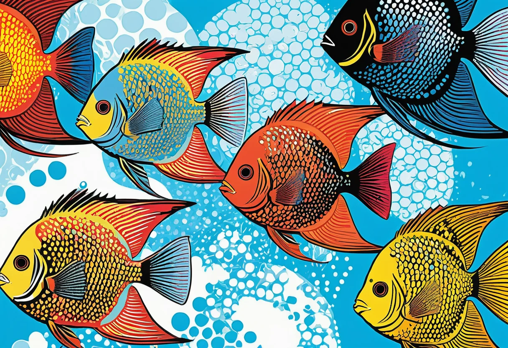
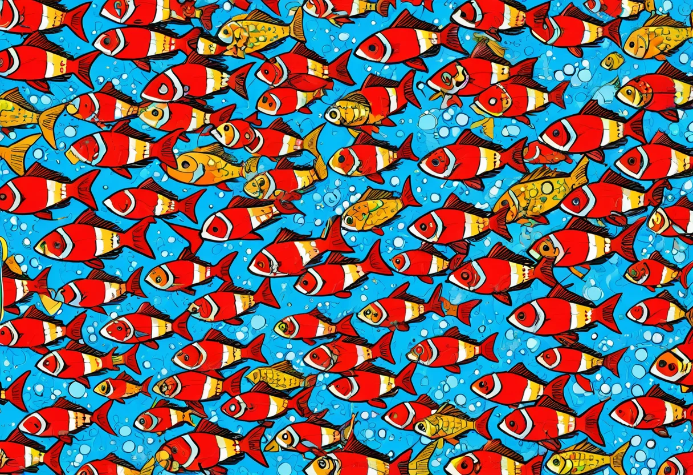

Aquarium Fische für Fortgeschrittene – Skalare, Diskus und anspruchsvolle Arten
Nach den ersten Erfolgen mit einem Gesellschaftsbecken kommt bei vielen Aquarianern der Wunsch nach anspruchsvolleren Fischarten. Skalare mit ihren majestätischen Flossen, Diskusfische mit ihren leuchtenden Farben oder die filigranen Keilfleckbuntbarsche – sie alle gelten als Königsklasse der Süßwasseraquaristik. Doch diese Fische stellen besondere Ansprüche an Wasserwerte, Beckengröße und Pflege. In diesem Artikel erfährst du, worauf du bei der Haltung fortgeschrittener Aquarienfische achten musst und welche Arten sich besonders lohnen.
Was macht einen Fisch zum „Fortgeschrittenenfisch"?
Die Einstufung einer Fischart als „für Fortgeschrittene" hat mehrere Gründe. In der Regel sind es erhöhte Ansprüche an die Wasserqualität, spezielle Ernährungsbedürfnisse, ausgeprägtes Territorialverhalten oder eine besondere Empfindlichkeit gegenüber Schwankungen. Während die meisten Gesellschaftsfische wie Guppys oder Neonsalmler auch kleine Pflegefehler verzeihen, reagieren anspruchsvolle Arten oft schon auf minimale Veränderungen mit Stress oder Krankheit.
Ein weiteres Kriterium ist die Beckengröße: Viele fortgeschrittene Fische benötigen Becken ab 200, 300 oder sogar 500 Litern – eine Größenordnung, die für Einsteiger selten realisierbar ist. Hinzu kommt die höhere technische Ausstattung, die für die artgerechte Haltung notwendig ist, wie leistungsstarke Filter, präzise Heizungen oder Osmoseanlagen.
Die Haltung solcher Fische ist jedoch keine unüberwindbare Hürde. Mit fundiertem Wissen, einer guten Planung und der Bereitschaft, regelmäßig Zeit und Mühe in die Pflege zu investieren, kannst du auch als fortgeschrittener Aquarianer erfolgreich Skalare, Diskus und Co. halten.


Skalare (Pterophyllum scalare) – Die Segler der Amazonasflüsse
Skalare sind zweifellos einer der beliebtesten Aquarienfische für Fortgeschrittene. Mit ihrer dreieckigen Körperform, den langen Flossen und ihrem eleganten Schwimmstil sind sie der Stolz jedes Aquariums. In der Natur werden Skalare bis zu 15 cm lang und 25 cm hoch – das erfordert ein Becken mit mindestens 120 cm Kantenlänge und 50 cm Höhe.
Wasserwerte für Skalare
Skalare stammen aus dem Amazonasbecken und bevorzugen daher weiches, leicht saures Wasser. Die optimalen Werte: Temperatur 26–30 °C, pH-Wert 6,0–7,0, Gesamthärte 3–10 °dGH. Sie reagieren empfindlich auf Nitrat (unter 25 mg/l) und benötigen eine gute Filterung mit gleichmäßiger Strömung. Wöchentliche Wasserwechsel von 30–40 % sind Pflicht.
Vergesellschaftung
Skalare sind zwar keine aggressiven Raubfische, aber sie fressen alles, was in ihr Maul passt. Kleine Fische wie Neonsalmler, Garnelen oder Guppy-Nachwuchs sind als Beutetiere einzustufen. Geeignete Beckenpartner sind größere Salmler wie Rote Neon, Kongosalmler, Panzerwelse (Corydoras), Harnischwelse (L-Welse) und friedliche Zwergbuntbarsche. Von Flossenkümmerern wie Sumatrabarben oder Schwertträgern ist abzuraten.
Haltungstipps
Skalare sind Schwarmfische, die in der Natur in lockeren Gruppen leben. Halte mindestens 5–6 Tiere, damit eine Rangordnung entstehen kann und kein Tier dauerhaft gemobbt wird. Bei der Fütterung sind sie nicht wählerisch, aber hochwertiges Futter mit pflanzlichen und tierischen Anteilen ist wichtig. Frostfutter wie rote und schwarze Mückenlarven, Artemia und Cyclops wird gerne angenommen. Scheue Tiere lassen sich durch regelmäßige Fütterung zur selben Zeit zähmen und fressen irgendwann aus der Hand.
🛒 Empfohlene Produkte
Diskusfische (Symphysodon aequifasciatus) – Die Könige der Aquaristik
Diskusfische gelten als der Gipfel der Süßwasseraquaristik. Ihre leuchtenden Farben, ihre runde, scheibenförmige Gestalt und ihr ruhiges, würdevolles Schwimmverhalten machen sie zu einer der begehrtesten Fischarten überhaupt. Die Haltung von Diskusfischen ist jedoch anspruchsvoll und erfordert Erfahrung, Geduld und eine erstklassige technische Ausstattung.
Beckengröße und Einrichtung
Diskusfische werden bis zu 20 cm groß und benötigen ein Becken ab 300 Litern (150 × 50 × 50 cm). Für eine Gruppe von 6–8 Tieren ist größer immer besser. Die Einrichtung sollte naturnah sein: weicher Sandboden, einige Wurzeln für Struktur und dichte Randbepflanzung mit Schwimmfarnen oder Vallisnerien. Offene Schwimmflächen sind jedoch ebenso wichtig. Die Beleuchtung sollte nicht zu grell sein – Diskus mögen es eher gedämpft.
Wasserwerte
Diskus benötigen weiches, saures Wasser mit einer Temperatur von 28–31 °C (deshalb die höheren Heizkosten!). Ideal sind pH 6,0–6,8, GH 2–8 °dGH, KH 1–4 °dKH und ein Leitwert unter 300 µS/cm. Die Nitratwerte müssen unter 15 mg/l gehalten werden. In den meisten Regionen Deutschlands ist Leitungswasser für Diskus zu hart – eine Osmoseanlage ist daher fast immer erforderlich.
Ernährung
Diskusfische haben einen hohen Stoffwechsel und brauchen 3–4 Mahlzeiten pro Tag. Hochwertiges Granulat- oder Frostfutter sowie spezielles Diskus-Herzfleisch (Rinderherz) sind die Grundlage der Ernährung. Achte auf abwechslungsreiche Kost mit Vitaminzusatz. Die Futterreste müssen sorgfältig entfernt werden, da sie sonst die Wasserqualität belasten.
Krankheitsanfälligkeit
Diskus sind anfällig für Parasiten (besonders Kiemen- und Hautwürmer), bakterielle Infektionen und die gefürchtete Lochkrankheit (Hole-in-the-Head). Diese Krankheiten treten fast immer als Folge von Stress, schlechter Wasserqualität oder einseitiger Ernährung auf. Vorbeugung durch regelmäßige Wasserwechsel, hochwertige Ernährung und Quarantäne für Neuzugänge ist der beste Schutz.
Weitere anspruchsvolle Arten für Fortgeschrittene
Südamerikanische Zwergbuntbarsche (Apistogramma)
Diese kleinen Buntbarsche werden nur 5–8 cm groß, sind aber in ihrem Verhalten hochinteressant. Sie besetzen Reviere, zeigen komplexe Balzrituale und betreiben intensive Brutpflege. Apistogramma-Arten benötigen weiches Wasser (pH 5,5–7,0), viele Versteckmöglichkeiten (Höhlen, Wurzeln) und eine durchdachte Vergesellschaftung. Sie sind perfekt für südamerikanische Biotopbecken ab 80 cm Länge.
Regenbogenfische (Melanotaeniidae)
Die farbenprächtigen Regenbogenfische aus Australien und Neuguinea sind lebhafte Schwarmfische, die in Gruppen ab 8 Tieren gehalten werden sollten. Sie werden 8–15 cm groß und brauchen Becken ab 120 cm Länge. Regenbogenfische bevorzugen härteres, neutrales bis leicht alkalisches Wasser und sind sehr schwimmaktiv. Eine starke Strömung und eine dichte Randbepflanzung mit freiem Schwimmraum entsprechen ihren Bedürfnissen.
L-Welse (Harnischwelse)
Die Gruppe der L-Welse umfasst hunderte Arten, von kleinen Algenfressern bis zu riesigen Panzerwelsen. Viele L-Welse sind anspruchsvoll in der Haltung: Sie benötigen sauerstoffreiches Wasser, starke Strömung, viel Platz und eine proteinreiche Ernährung. L-Welse sind nachtaktiv und brauchen Versteckmöglichkeiten in Höhlen und unter Wurzeln. Aufgrund ihrer Größe (20–60 cm) sind sie nur für große Becken ab 300 Litern geeignet.
Technik für fortgeschrittene Aquarien
Die Haltung anspruchsvoller Fische erfordert eine erstklassige technische Ausstattung. Folgende Komponenten sind empfehlenswert:
- Außenfilter mit doppelter Filterleistung: Mindestens 6–8-faches Beckenvolumen pro Stunde, idealerweise mit zusätzlichem Strömungsfilter oder Strömungspumpe.
- Präzise Heizung: Zwei Heizstäbe zur gegenseitigen Absicherung, kombiniert mit einem digitalen Temperaturregler.
- CO2-Anlage: Für dichtes Pflanzenwachstum und stabile pH-Werte, besonders in Diskusbecken wichtig.
- Osmoseanlage: Für die Aufbereitung des Wassers auf die gewünschten Werte. Unverzichtbar für Diskus und viele Zwergbuntbarsche.
- Zeitschaltuhren für Beleuchtung: Feste Lichtzyklen mit Dämmerungsphasen reduzieren Stress bei empfindlichen Arten.
🛒 Empfohlene Produkte
Typische Fehler bei der Haltung anspruchsvoller Fische
Auch erfahrene Aquarianer machen gelegentlich Fehler. Die häufigsten Probleme bei der Haltung von Fortgeschrittenenfischen sind:
- Zu früher Besatz: Das Aquarium muss vollständig eingefahren sein (4–8 Wochen), bevor anspruchsvolle Fische einziehen. Ein Nitritpeak kann für Diskus und Skalare tödlich sein.
- Überbesatz: Fortgeschrittene Fische brauchen mehr Platz als Standardfische. Die Besatzdichte sollte niedriger sein als bei einem Gesellschaftsbecken.
- Vernachlässigung der Wasserwechsel: Wöchentliche Wasserwechsel von 30–50 % sind keine Option – sie sind Pflicht. Besonders bei Diskusfischen ist das Altern des Wassers die häufigste Krankheitsursache.
- Falsche Futterzusammensetzung: Nicht jedes Fertigfutter ist für jede Art geeignet. Informiere dich über den natürlichen Nährstoffbedarf deiner Fische.
- Quarantäne vernachlässigen: Neue Fische sollten immer 2–4 Wochen in einem separaten Quarantänebecken beobachtet werden, bevor sie ins Hauptbecken kommen.
Fazit
Die Haltung von Skalaren, Diskusfischen und anderen anspruchsvollen Arten ist die Königsdisziplin der Aquaristik. Sie erfordert fundiertes Wissen, eine hochwertige technische Ausstattung und vor allem regelmäßige Pflege. Doch die Mühe lohnt sich: Es gibt kaum etwas Schöneres, als eine Gruppe gesunder, ausgewachsener Diskusfische durch ein üppig bepflanztes Becken gleiten zu sehen. Wer bereit ist, die Verantwortung zu übernehmen, wird mit einer der faszinierendsten Erfahrungen belohnt, die die Aquaristik zu bieten hat.
Du möchtest dich weiterbilden? Unser Wasserwerte-Guide und der Technik-Überblick helfen dir bei der optimalen Einrichtung deines Fortgeschrittenenbeckens.